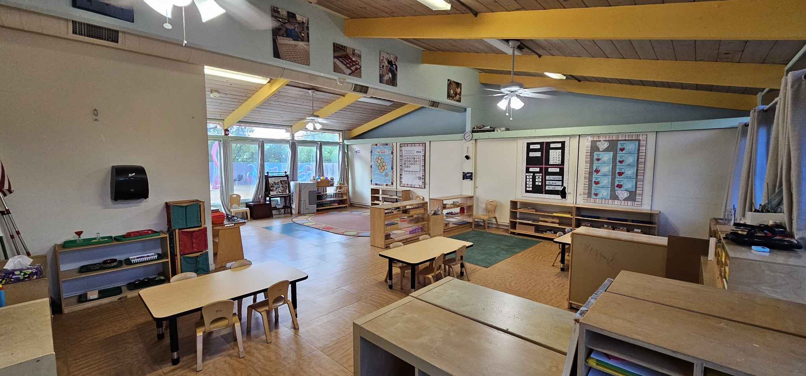
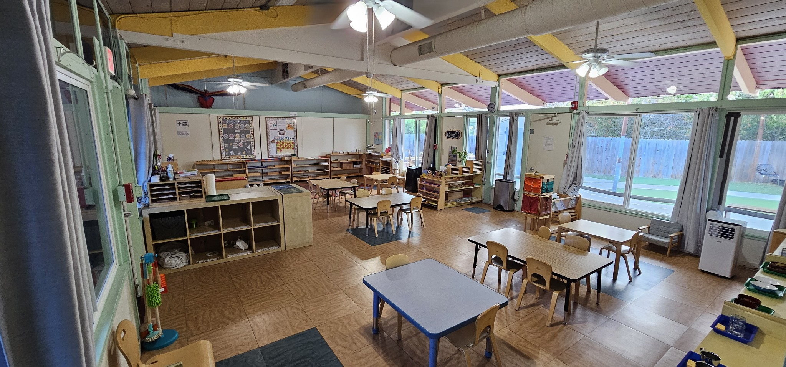
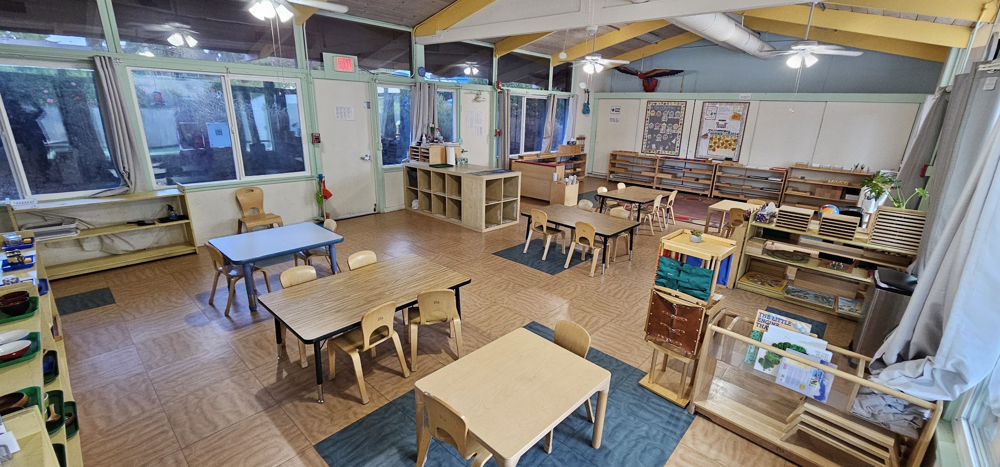
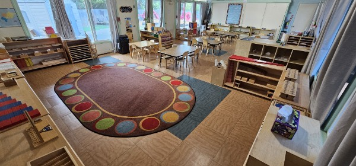
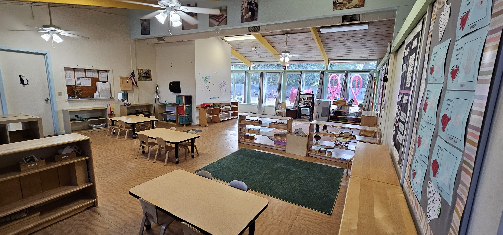
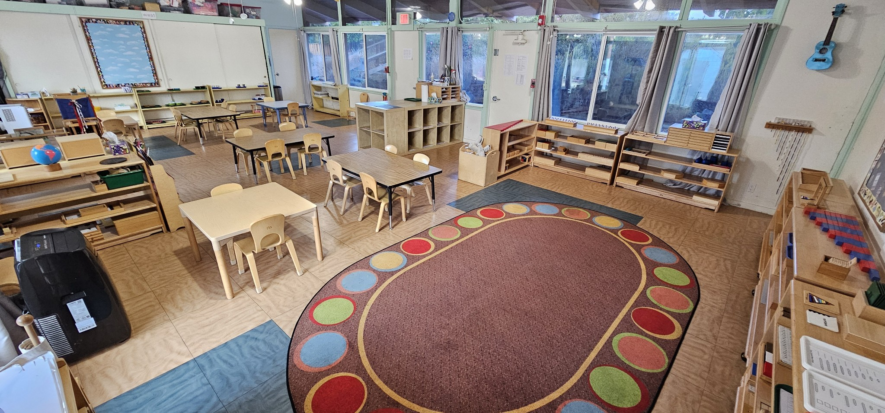

Roots N Wings Montessori in Redwood City is a child care center tucked away and
surrounded by nature. We serve children from 2-6 years old.
Child to teacher ratio is 6:1. Our teachers are all Montessori trained and
have many years of teaching experience.
Video Tour
Want to see more? Schedule an onsite tour below!
Hours
Hours are from 8:30 am to 5:30 pm daily Monday to Friday.
Enrichment
Baking and Cooking
Gardening
Yoga and Gymnastics
Japanese and Spanish immersion
Music and Movement
Technology and Art, the Montessori Way
Admissions
Schedule a learning tour (blue button bottom-right below). Directions to RnW
here.
After completing the tour, we will email you the link to the Admissions process through
Brightwheel.
This includes specifying the desired start date of your child, payments, licensing forms and
other required information. All of the steps will be facilitated through the Brightwheel app.
Once you complete the enrollment process you will receive a welcome email from the school
admistrator.
Roots N Wings of Woodside by Kubo Montessori LLC strives to create an inclusive community in our small
school in the Woodside. For admissions, we consider:
Gender and diversity balance within each class
Child’s age and current developmental range of the class
Siblings of current families, who are given preference (but we cannot guarantee their
acceptance)
Date of application/fee (applications are organized in order of fee postmark date and are
categorized into the appropriate class)
Completion of learning tour
Roots N Wings of Redwood City by Kubo Montessori LLC admits students of any race, color, religion,
disability,
and national or ethnic origin, and accords to them all of the privileges, programs, and activities
made available at the school. It does not discriminate on the basis of race, color, religion,
disability, national or ethnic origin, or sexual orientation in administration or its educational
policies, admission policies, financial aid and other school-administered programs.
Our Center






Our Teachers
Mr. Roi Brigino
Mr. Roi Brigino has been a preschool teacher since 2012. He completed 18 units of Early Childhood
Education from Canada College.
Mr. Roi attended AMI training courses for Early Childhood Education. He has 8 years of teaching
experience in a Montessori classroom and constantly attending seminars to update his Montessori
teaching skills.
Ms. Debbie Brito
Ms. Debbie is originally from Brazil where she finished her Bachelor's Degree in Elementary Education
and Teaching- Pedagogy from Faculdade De Ensino Regional Alternativa- FERA. She also completed her
Associate in Science in Information Technology from Federal Institute in Brazil while completing her
bachelor's degree. When she moved to California Ms. Debbie finished her Associate Degree in Early
Childhood Education from Orange Coast College in Costa Mesa, CA. She is Teacher Certified in
California and has 46+ ECE units with Infant toddler, Special Education, Adult supervision, and ECE
management units. Ms. Debbie also is completing her Assistance to Infancy 0-3 years from Association
Montessori Internationale with Montessori Institute of San Diego.
Ms. Debbie has also written two children's books
and is fluent in Spanish and Portuguese.
Ms. Nasreen Jamil
Ms. Nasreen Jamil is an immigrant from Afghanistan and has been in the country for 20+ years. She
earned her Bachelor's degree at Kabul Polytechnic University. When she moved to California she
completed her AA in Early Childhood Development at Ohlone College in Fremont. Ms. Nasreen has had
amazing opportunities to work with children in different Montessori schools and HeadStart in the
Bay Area. She is the mother of two daughters who are completing their college degrees in the
UCs.
Ms. Griselda Salazar
Ms. Griselda Salazar was born and raised in the Bay Area. She is Mexican American and can speak both
English and Spanish. She started her teaching journey in community college studying Early Childhood
Education. During her time in college, she learned about the Montessori Method and was instantly a
huge fan. She became extremely passionate about the teaching approach. She worked as a teacher at
Outschool for a few years where she did more traditional teaching but over time realized that her
interest in learning and practicing the Montessori Method is something she wants to pursue. Working
and teaching at Roots N Wings Montessori was a wonderful opportunity to start her teaching career.
She is currently taking her Montesori certificate at MTEC/San Francisco Bay Area and taking each day
as a one big step of becoming a true Montessori guide.
Ms. Bianca Araneta
Ms. Bianca is a recent graduate student joining Roots N Wings part-time. She completed her Bachelor
of Science
with a focus in Legal Studies, Government Service and Public Policy from Penn State University in
2022. She also earned 6 units of Early Childhood Education from Skyline College last Spring and 3
units from Penn State. Ms. Bianca has been our Summer teacher substitute for the past 6 years at
Kubo Montessori LLC. She will be our afternoon school teacher and administrator.